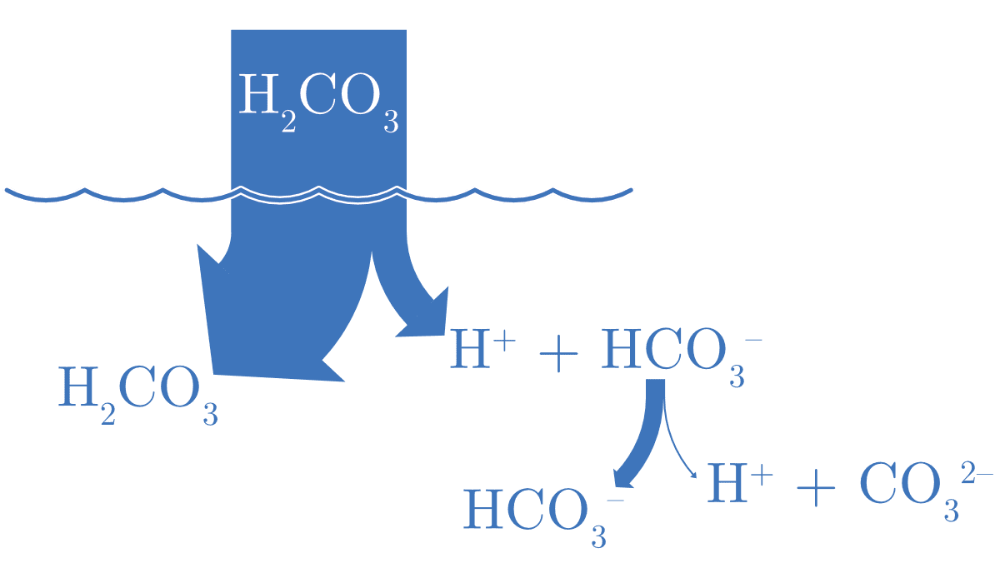
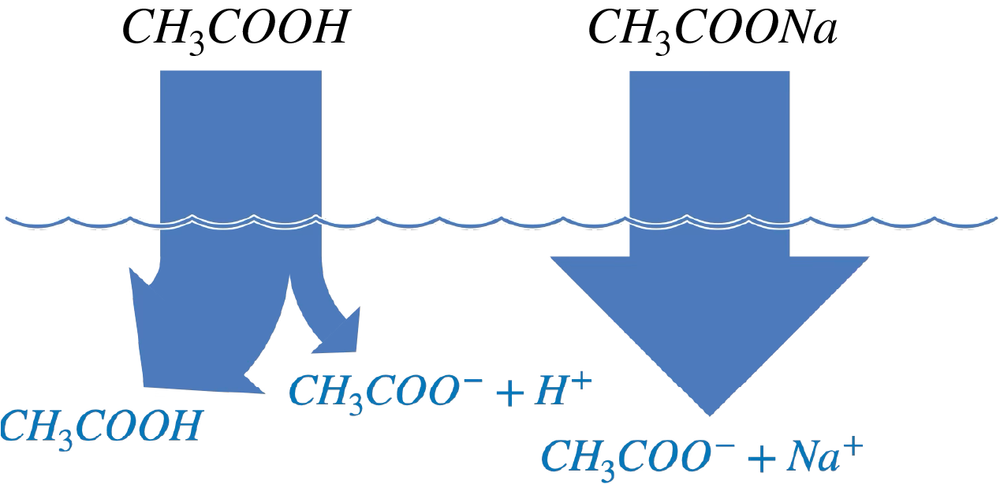
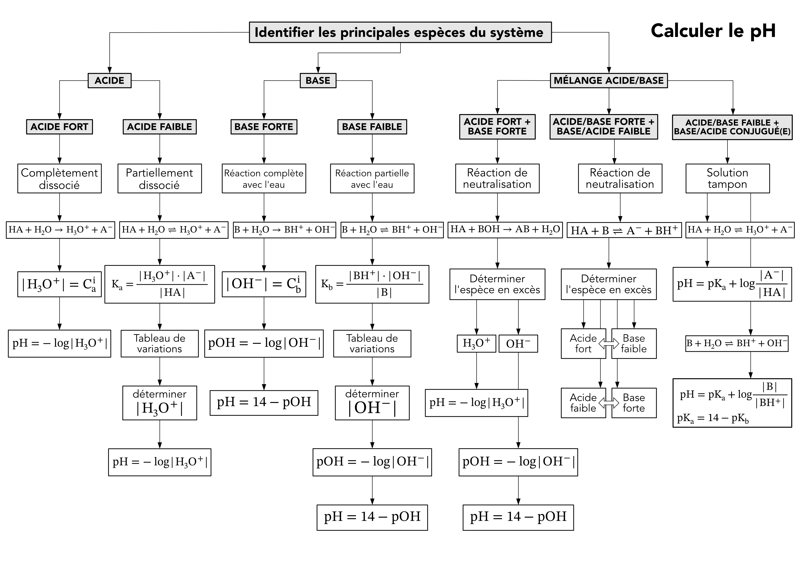
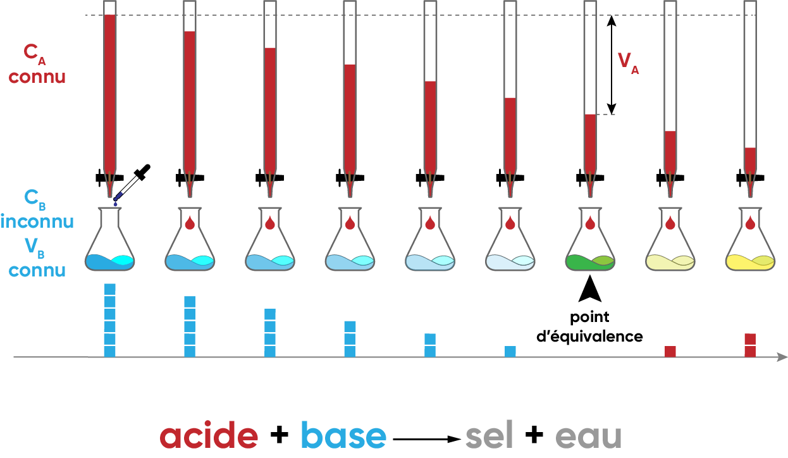
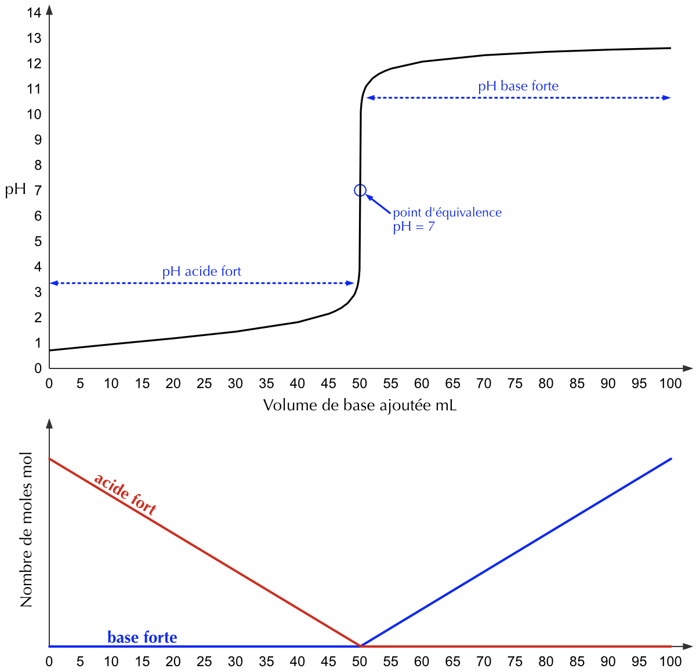
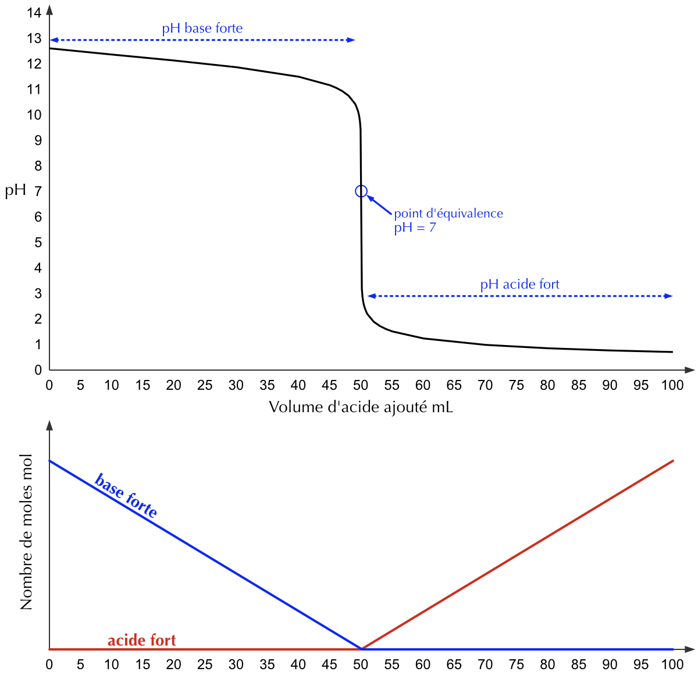
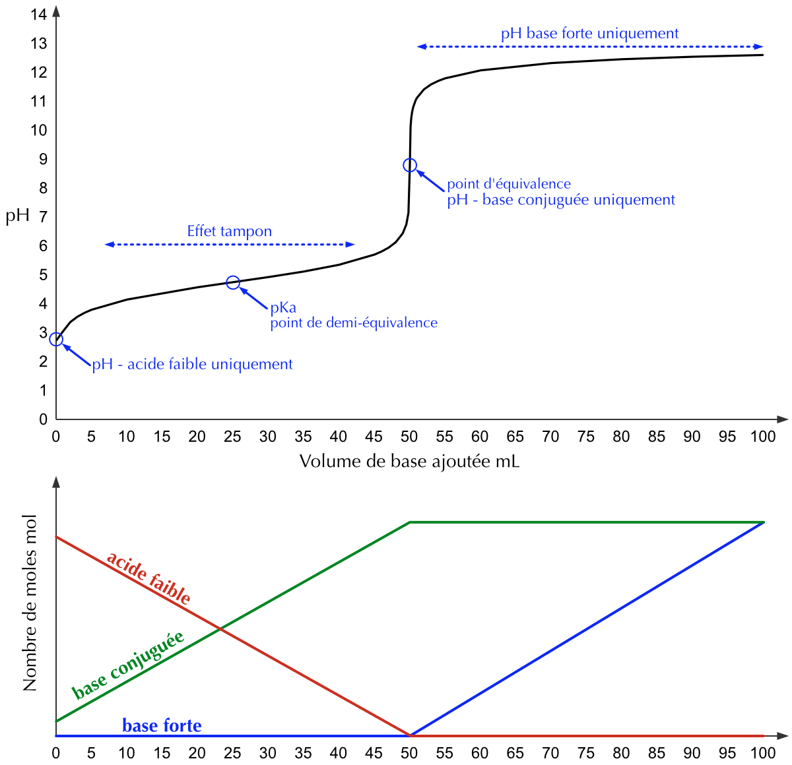
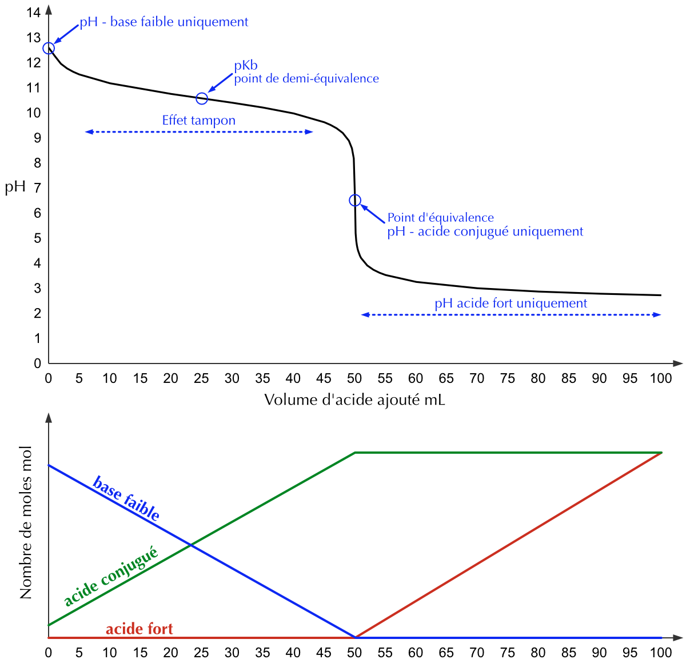
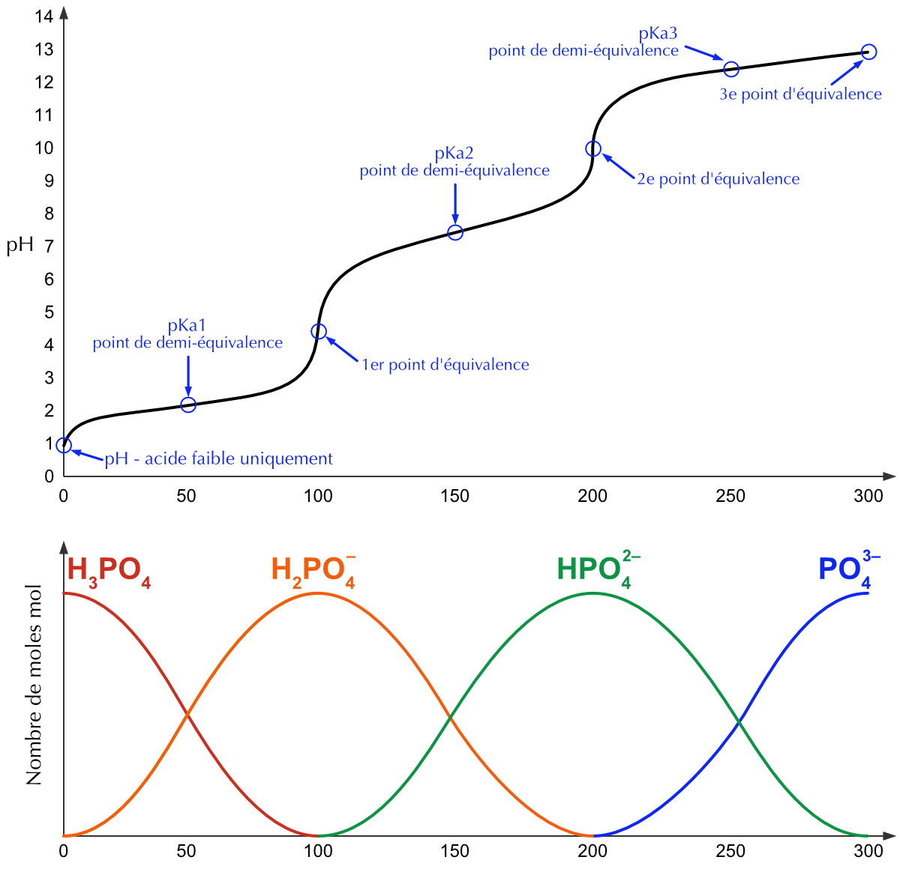
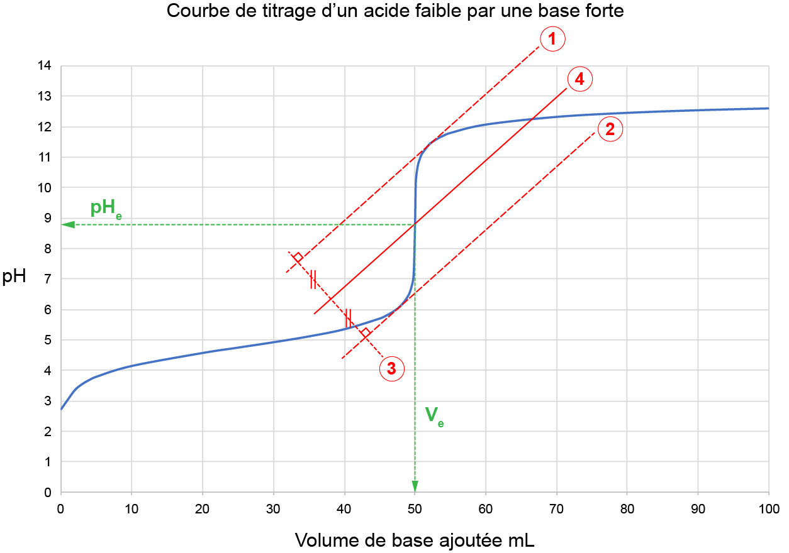

18 Le pH ou potentiel hydrogène
- Définir le pH et son échelle.
- Calculer le pH des acides forts et des bases fortes.
- Calculer le pH des acides faibles et des bases faibles.
- Calculer le pH des acides polyprotiques.
- Définir ce qu’est une solution tampon.
- Calculer le pH d’une solution tampon.
- Effectuer des calculs stœchiométriques sur la base d’une neutralisation donnée.
- Tracer une courbe de titrage en calculant le pH pour différents volumes de solution titrante ajoutés.
- Extraire les informations du tracé d’une courbe de titrage.
18.1 Le pH : définition et échelle
Le pH (potentiel hydrogène) est une grandeur sans unité qui permet de caractériser l’acidité ou la basicité d’une solution aqueuse. Il est défini comme le logarithme négatif de la concentration molaire des ions hydronium (\(\ce{H3O}^{+}_{(aq)}\)), exprimée en moles par litre (M) :
\[ pH = - \log\ |\ce{H3O}^{+}_{(aq)}| \]
Inversement, la concentration en ions \(\ce{H3O}^{+}_{(aq)}\) peut être déterminée à partir du pH
par la relation :
\[ |\ce{H3O}^{+}_{(aq)}| = 10^{-pH} \]
Afin de simplifier les calculs de pH, la convention “\(p\)” est utilisée comme préfixe pour signifier “\(-log\)” (\(pKa\), \(pKb\), \(pKe\), \(pH\), \(pOH\)).
À une température de 25°C, l’échelle de pH se divise comme suit :
| pH < 7 | la solution est acide |
| pH = 7 | la solution est neutre |
| pH > 7 | la solution est basique |
Les ions \(\ce{H3O}^{+}\) et \(\ce{H}^{+}\) ont la même signification en solution aqueuse ; par souci de simplification, \(\ce{H}^{+}\) est parfois utilisé à la place de \(\ce{H3O}^{+}\).
| Solution courante | pH (Approximatif) | |\(\ce{H3O}^{+}_{(aq)}\)| (mol/L) |
|---|---|---|
| Jus de citron | 2 | \(1.2 \cdot 10^{-3}\) à \(5.0 \cdot 10^{-4}\) |
| Vinaigre | 3 | \(1.2 \cdot 10^{-3}\) à \(5.0 \cdot 10^{-4}\) |
| Tomates | 4 | \(1.0 \cdot 10^{-5}\) à \(1.0 \cdot 10^{-6}\) |
| Café | 5 | \(1.0 \cdot 10^{-5}\) |
| Salive | 6.5 | \(1.0 \cdot 10^{-6}\) à \(1.5 \cdot 10^{-7}\) |
| Lait | 6.6 | \(3.2 \cdot 10^{-7}\) à \(9.1 \cdot 10^{-8}\) |
| Eau distillée | 7 | \(1.0 \cdot 10^{-7}\) |
| Savon | 10 | \(1.0 \cdot 10^{-9}\) à \(1.0 \cdot 10^{-10}\) |
| Détergent à lessive | 11 | \(1.0 \cdot 10^{-10}\) à \(1.0 \cdot 10^{-12}\) |
| Eau de Javel | 12 | \(1.0 \cdot 10^{-11}\) à \(1.0 \cdot 10^{-13}\) |
L’échelle de pH est logarithmique, ce qui implique qu’une variation d’une unité de pH représente une variation d’un facteur 10 de la concentration en ions \(\ce{H3O}^{+}_{(aq)}\).
| pH | 1 | 2 | 3 | 4 | 5 | 6 | 7 | 8 | 9 | 10 | 11 | 12 | 13 |
|---|---|---|---|---|---|---|---|---|---|---|---|---|---|
| \(\ce{H}^{+}\) | 10-1 | 10-2 | 10-3 | 10-4 | 10-5 | 10-6 | 10-7 | 10-8 | 10-9 | 10-10 | 10-11 | 10-12 | 10-13 |
| \(\ce{OH}^{-}\) | 10-13 | 10-12 | 10-11 | 10-10 | 10-9 | 10-8 | 10-7 | 10-6 | 10-5 | 10-4 | 10-3 | 10-2 | 10-1 |
L’échelle de pH est généralement représentée de 0 à 14, bien que des valeurs en dehors de cette plage soient possibles dans des conditions extrêmes.
Répondez aux questions suivantes sur le pH.
- Comment le pH est-il défini à partir de \(|\ce{H3O}^{+}|\) ?
- Une solution a un pH de 3, une autre un pH de 6. Laquelle est la plus acide, et combien de fois sa concentration en \(\ce{H3O}^{+}\) est-elle plus grande ?
- Calculez le pH d’une solution où \(|\ce{H3O}^{+}| = 10^{-9}\) M. La solution est-elle acide, neutre ou basique ?
- \(pH = -\log |\ce{H3O}^{+}|\), la concentration étant exprimée en mol/L.
- La solution de pH 3 est la plus acide. L’échelle étant logarithmique, une différence de 3 unités de pH correspond à un facteur \(10^3 = 1000\) : sa concentration en \(\ce{H3O}^{+}\) est 1000 fois plus grande.
- \(pH = -\log(10^{-9}) = 9\). Comme \(pH > 7\), la solution est basique.
18.2 Calcul du pH
18.2.1 Acides forts
Les acides forts sont caractérisés par une dissociation complète dans l’eau.
\[ \ce{HA + H2O -> H3O+ + A-} \]
La concentration des ions hydronium est donc égale à la concentration de l’acide :
\[ |\ce{H3O}^{+}_{(aq)}| = C_{acide} \quad \Rightarrow \quad pH = - \log\ |\ce{H3O}^{+}_{(aq)}| \]
Pour le calcul du pH des acides polyprotiques, il est nécessaire de considérer la libération de chaque proton. Les déprotonations successives peuvent être non négligeables et doivent être prises en compte dans le calcul du pH.
Calculez le pH d’une solution
- de \(\ce{HBr}\) 0.002 M
- obtenue en diluant 10 fois une solution de \(\ce{HCl}\) initialement au pH 2 ?
- \[ \begin{split} |\ce{H3O}^{+}| = 0.002\ M \end{split} \quad \begin{split} pH = - \log 0.002 \cong 2.7 \end{split} \]
- pH = 3 (échelle logarithmique)
Calculez la concentration d’une solution :
- de \(\ce{HNO3}\) de pH 1.6.
- obtenue en diluant 5 fois une solution de \(\ce{HCl}\) initialement au pH 3.
- \[ \begin{split} |\ce{H3O}^{+}| = 10^{-pH} = 10^{-1.6} = 0.025\ M \end{split} \quad \begin{split} |\ce{HNO3}| = |\ce{H3O}^{+}| \quad \text{(acide fort)} \end{split} \]
- \[ \begin{split} |\ce{HCl}| = |\ce{H3O}^{+}| = 10^{-pH} = 10^{-3}\ M \end{split} \quad \begin{split} \text{dilution 5x} \Rightarrow \frac{10^{-3}}{5} = 2 \cdot 10^{-4}\ M \end{split} \]
- Quelle masse de \(\ce{HCl}\) faut-il dissoudre dans 100 mL d’eau distillée pour obtenir un pH de 1.3 ?
- Que devient ce pH si l’on ajoute encore 100 mL d’eau à cette solution ?
- \[ \begin{split} |\ce{HCl}| &= |\ce{H3O}^{+}| = 10^{-1.3}\ M = 5.01 \cdot 10^{-2}\ M \\ n_{\ce{HCl}} &= C \cdot V = 5.01 \cdot 10^{-2}\ \text{ mol/L} \cdot 10^{-1}\ \text{ L} = 5.01 \cdot 10^{-3}\ \text{ mol} \\ m_{\ce{HCl}} &= n \cdot M = 5.01 \cdot 10^{-3}\ \text{ mol} \cdot 36.45\ \text{ g/mol} \cong 0.182\ \text{ g} \end{split} \]
- Cela revient à diluer 2 fois. \[ \begin{split} |\ce{HCl}| &= |\ce{H3O}^{+}| = \frac{5 \cdot 10^{-2}\ \text{ mol/L}}{2} = 2.5 \cdot 10^{-2}\ M \\ pH &= - \log |\ce{H3O}^{+}| = - \log 2.5 \cdot 10^{-2} \cong 1.6 \end{split} \]
Quel volume d’eau faut-il ajouter à 25 mL d’une solution de \(\ce{HNO3}\) de pH = 2.5 pour amener ce pH à 3 ?
\[ |\ce{H3O}^{+}|_{initial} = 10^{-2.5} \cong 3.16 \cdot 10^{-3}\ M \] \[ n_{\ce{H3O}^{+}} = C \cdot V = 3.16 \cdot 10^{-3}\ M \cdot 25 \cdot 10^{-3}\ \text{ L} \cong 7.91 \cdot 10^{-5}\ \text{ mol} \] \[ |\ce{H3O}^{+}|_{final} = \frac{n}{V} = \frac{7.91 \cdot 10^{-5}\ \text{ mol}}{V} = 10^{-3}\ M \] \[ V = \frac{7.91 \cdot 10^{-5}\ \text{ mol}}{10^{-3}\ \text{ mol/L}} = 7.91 \cdot 10^{-2}\ \text{ L} = 79.1\ mL \cong 79\ mL \] Il faut ajouter \(79\ mL - 25\ mL = 54\ mL\) d’eau.
Calculez le pH d’une solution de \(\ce{HClO4}\) \(2 \cdot 10^{-3}\) M.
\[ pH = - log(|\ce{H3O}^{+}|) = - log(2 \cdot 10^{-3}) \cong 2.7 \]
18.2.2 Bases fortes
Les bases fortes sont caractérisées par une dissociation complète dans l’eau.
\[ \ce{B + H2O -> BH+ + OH-} \]
La concentration des ions hydroxyde est donc égale à la concentration initiale de la base :
\[ |\ce{OH}^{-}_{(aq)}| = C_{base} \quad \Rightarrow \quad pOH = - \log\ |\ce{OH}^{-}_{(aq)}| \]
En utlisant le produit ionique de l’eau (\(K_e\)), on peut relier le pH et le pOH :
\[ \begin{split} K_e &= |\ce{H3O}^{+}| \cdot |\ce{OH}^{-}| = 10^{-14} \\ -\log\ K_e &= (-\log\ |\ce{H3O}^{+}|)+(-\log\ |\ce{OH}^{-}|) \\ 14 &= pH + pOH \end{split} \qquad\Rightarrow\qquad \begin{split} pH &= 14 - pOH \end{split} \]
Calculez le pH d’une solution d’hydroxyde de potassium 0.001 M.
- \[ |\ce{OH}^{-}| = |\ce{KOH}| = 0.001\ M \: \text{(base forte)} \] \[ \begin{split} pH = 14 - pOH &= 14 - ( - \log 0.001 ) \\ &= 11 \end{split} \qquad \text{ou} \qquad \begin{split} |\ce{H3O}^{+}| &= \frac{10^{-14}}{|\ce{OH}^{-}|} = 10^{-11} \\ pH &= - \log 10^{-11} = 11 \end{split} \]
Calculez la concentration d’une solution de \(\ce{NaOH}\) de pH = 9.3.
\[ \begin{split} |\ce{H3O}^{+}| = 10^{-9.3} \end{split} \qquad \begin{split} |\ce{OH}^{-}| &= \frac{10^{-14}}{|\ce{H3O}^{+}|} \\ &= \frac{10^{-14}}{10^{-9.3}} = 10^{-4.7} = 2 \cdot 10^{-5}\ M \\ |\ce{NaOH}| &= |\ce{OH}^{-}| = 2 \cdot 10^{-5}\ M \quad \text{(base forte)} \end{split} \]
On ajoute 250 mL d’eau à 20 mL d’une solution de base forte, de pH = 12. Quel sera le pH de la solution obtenue ?
\[ \begin{split} |\ce{H3O}^{+}| = 10^{-12}\ M \end{split} \qquad \text{et} \qquad \begin{split} |\ce{OH}^{-}| = 10^{-2}\ M \end{split} \] \[ n_{\ce{OH}^{-}} = C \cdot V = 10^{-2}\ M \cdot 2 \cdot 10^{-3}\ \text{ L} = 2 \cdot 10^{-5}\ \text{ mol} \] Après dilution : \[ |\ce{OH}^{-}| = \frac{n}{V} = \frac{2 \cdot 10^{-5}\ \text{ mol}}{270 \cdot 10^{-3}\ \text{ L}} \cong 7.41 \cdot 10^{-5}\ M \] \[ pH = 14 + \log(|\ce{OH}^{-}|) = 14 + \log(7.41 \cdot 10^{-5}) \cong 9.87 \]
Calculez le pH d’une solution de \(\ce{KOH}\) \(2 \cdot 10^{-3}\) M.
\[ pH = 14 + log(|\ce{OH}^{-}|) = 14 + log(2 \cdot 10^{-3}) \cong 11.3 \]
Calculez la concentration d’une solution de \(\ce{Ca(OH)2}\) de pH = 9.3.
\[ \begin{split} pOH = 14 - 9.3 = 4.7 \end{split} \qquad \begin{split} \ce{Ca(OH)2 -> Ca^{2+} + 2\ OH-} \end{split} \] \[ |\ce{OH}^{-}| = 10^{-4.7} = 2 \cdot 10^{-5}\ M \Rightarrow |\ce{Ca(OH)2}| = \frac{1}{2} \cdot |\ce{OH}^{-}| = 10^{-5}\ M \]
Calculez le pH des solutions suivantes :
- \(\ce{HI}\) 0.025 mol/L.
- \(\ce{Ca(OH)2}\) 0.003 mol/L.
- \(\ce{NaOH}\) 2 g/L.
- 0.315 mg de \(\ce{HNO3}\) dans 10 mL de solution
- \[ pH = - \log 0.025 \cong 1.6 \]
- \[ |\ce{OH^-}| = 2 \cdot |\ce{Ca(OH)2}| = 0.006 \Rightarrow pH = 14 + \log(0.006) = 11.78 \]
- \[ \begin{split} 2\ \text{ g/L} &= 0.05\ \text{ mol/L} \\ pH &= 14 + \log(0.05) \cong 12.7 \end{split} \]
- \[ \begin{split} n_{\ce{HNO3}} &= \frac{0.315 \cdot 10^{-3}\ \text{ g}}{63\ \text{ g/mol}} = 5 \cdot 10^{-6}\ \text{ mol} \\ |\ce{HNO3}| &= \frac{n}{V} = \frac{5 \cdot 10^{-6}\ \text{ mol}}{10 \cdot 10^{-3}\ \text{ L}} = 5 \cdot 10^{-4}\ M \\ pH &= - \log |\ce{H3O}^{+}| = - \log 5 \cdot 10^{-4} \cong 3.301 \end{split} \]
Calculez la concentration des solutions suivantes :
- \(\ce{HCl}\) de pH = 4.
- \(\ce{KOH}\) de pH = 12.
- \(|\ce{HCl}| = 10^{-4}\ M\)
- \(|\ce{H3O}^{+}| = 10^{-12}\ M\) et \(|\ce{KOH}| = |\ce{OH}^{-}| = 10^{-2}\ M\)
18.2.3 Acides faibles
Les acides faibles sont caractérisés par une dissociation partielle dans l’eau.
\[ \ce{HA + H2O <=> H3O+ + A-} \]
La concentration des ions hydronium dépend donc du degré de dissociation de l’acide faible. Pour calculer le pH, il est nécessaire de connaître la constante d’acidité (\(K_a\)) de l’acide faible, qui est définie par l’équation :
\[ K_a = \frac{|\ce{H3O}^{+}| \cdot |\ce{A}^{-}|}{|\ce{HA}|} \]
Pour calculer la concentration en ions hydronium, on utilise un tableau de variations pour déterminer les concentrations à l’équilibre.
Prenons l’exemple d’une solution d’acide cyanhydrique HCN 0.1 M, un acide faible, dont on souhaite déterminer le pH.
\[ \ce{HCN(aq) + H2O(l) <=> H3O+(aq) + CN^{-}(aq)} \qquad \text{avec } K_a = 4.9 \cdot 10^{-10} \]
Les conditions initiales, les variations et les conditions d’équilibre peuvent être synthétisées dans le tableau ci-dessous.
| \(\ce{HCN(aq)}\) | \(\ce{H3O+(aq)}\) | \(\ce{CN^{-}(aq)}\) | |
|---|---|---|---|
| Poportions | 1 | 1 | 1 |
| Cinitiale | 0.1 | ≈0 | 0 |
| \(\Delta\)C | -x | +x | +x |
| Cfinale | 0.1-x | x | x |
On fait une première approximation en considérant la concentration initiale des ions H3O+ comme nulle. On néglige la quantité des ions H3O+ provenant de l’autoprotolyse de l’eau.
La variable x représente la quantité d’acide qui se dissocie. Déterminons maintenant l’expression de la constante d’acidité Ka :
\[ K_a = \frac{|\ce{H3O}^{+}| \cdot |\ce{CN}^{-}|}{|\ce{HCN}|} = \frac{x \cdot x}{0.1 - x} = \frac{x^2}{0.1 - x} \]
Souvent, une approximation peut être faite lorsque la constante d’équilibre est très faible. Cette approximation est valide si la quantité d’acide (ou de base) dissociée est inférieure à 5% de la concentration initiale de l’acide (ou de la base).
Ka étant très faible, on fait une deuxième approximation en négligeant la quantité d’acide dissociée (x) et donc, simplifier la constante :
\[ K_a = \frac{x^2}{0.1 - \cancel{x}} = \frac{x^2}{0.1} = 4.9 \cdot 10^{-10} \]
On obtient une équation du second degré. Il suffit de résoudre cette équation en x pour déterminer la valeur de |H3O+| :
\[ \begin{split} \frac{x^2}{0.1} = 4.9 \cdot 10^{-10} \end{split} \qquad \begin{split} \sqrt{\frac{x^2}{0.1}} &= \sqrt{4.9 \cdot 10^{-10}} \\ x &= \sqrt{4.9 \cdot 10^{-10} \cdot 0.1} = 7 \cdot 10^{-6}\ M \end{split} \]
Nous trouvons donc une valeur de |H3O+| égale à \(7 \cdot 10^{-6}\) M.
L’approximation est bien valide puisque \(x \lll 0.1\) M.
Le rapport entre la quantité dissociée et la concentration initiale d’acide doit être inférieur à 5% pour utiliser l’approximation.
Dans cet exemple, nous avons :
\[ \frac{7 \cdot 10^{-6}}{0.1} = 0.007\% \]
Finalement, on calcule le pH :
\[ pH = - \log |\ce{H3O}^{+}| = - \log 7 \cdot 10^{-6} = 5.15 \]
Calculez le pH d’une solution de \(\ce{HClO2}\) 0.100 mol/L avec Ka = \(1.1 \cdot 10^{-2}\) M. Effectuer dans un premier temps les calculs en appliquant l’approximation, puis sans appliquer l’approximation.
\[ \ce{HClO2 + H2O <=> H3O+ + ClO2-} \] \[ \begin{split} &\ce{HClO2}\\ C_i &= 0.100\ M \\ \Delta C &= - x\ M \\ C_f &= 0.100 - x\ M \\ \end{split} \qquad \begin{split} &\ce{H3O}^{+}\\ C_i &= 0\ M \\ \Delta C &= + x\ M \\ C_f &= x\ M \\ \end{split} \qquad \begin{split} &\ce{ClO2}^{-}\\ C_i &= 0\ M \\ \Delta C &= + x\ M \\ C_f &= x\ M \\ \end{split} \] \[ K_a = \frac{|\ce{H3O}^{+}| \cdot |\ce{ClO2}^{-}|}{|\ce{HClO2}|} = \frac{x \cdot x}{0.100-x} = \frac{x^2}{0.100-x} \] On approxime en négligeant le x : \[ \begin{split} K_a = \frac{x^2}{0.100-\cancel{x}} = \frac{x^2}{0.100} \end{split} \qquad \begin{split} \Rightarrow 1.1 \cdot 10^{-2} &= \frac{x^2}{0.100} \\ x &= \sqrt{1.1 \cdot 10^{-2} \cdot 0.100} \\ &= 3.32 \cdot 10^{-2}\ \text{ mol/L} \end{split} \] L’approximation n’est pas valide : \(\frac{0.033}{0.100} \cdot 100\% = 33\% > 5\%\)
Sans appliquer d’approximation : \[ \begin{split} K_a = \frac{x^2}{0.100-x} \end{split} \qquad \begin{split} \Rightarrow 1.1 \cdot 10^{-2} &= \frac{x^2}{0.100-x} \\ 1.1 \cdot 10^{-2} \cdot (0.100-x) &= x^2 \\ 0.0011 - 0.011 \cdot x &= x^2 \\ x^2 + 0.011 \cdot x - 0.0011 &= 0 \end{split} \] Après résolution : \[ \begin{split} x = 0.028\ M \end{split} \qquad\qquad \begin{split} x = \cancel{-0.039}\ M \quad \text{non valable} \end{split} \] \[ \begin{split} |\ce{H3O}^{+}| = x = 0.028\ M \end{split} \qquad\qquad \begin{split} pH &= - \log |\ce{H3O}^{+}| \\ &= - \log 0.028 \cong 1.55 \end{split} \]
18.2.4 Bases faibles
Les bases faibles sont partiellement protonées en solution aqueuse.
\[ \ce{B + H2O <=> BH+ + OH-} \]
La concentration des ions hydroxyde dépend donc du degré de protonation de la base faible. Pour calculer le pH, il est nécessaire de connaître la constante de basicité (\(K_b\)) de la base faible, qui est définie par l’équation :
\[ K_b = \frac{|\ce{BH}^{+}| \cdot |\ce{OH}^{-}|}{|\ce{B}|} \]
Pour calculer la concentration en ions hydroxyde, on utilise un tableau de variations pour déterminer les concentrations à l’équilibre.
Prenons l’exemple d’une solution d’ammoniaque NH3 0.2 M, une base faible, dont on souhaite déterminer le pH. La démarche est la même que pour un acide faible.
\[ \ce{NH3(aq) + H2O(l) <=> NH4+(aq) + OH^{-}(aq)} \qquad \text{avec } K_b = 1.8 \cdot 10^{-5} \]
Les conditions initiales, les variations et les conditions d’équilibre peuvent être synthétisées dans le tableau ci-dessous.
| \(\ce{NH3(aq)}\) | \(\ce{NH4+(aq)}\) | \(\ce{OH^{-}(aq)}\) | |
|---|---|---|---|
| Poportions | 1 | 1 | 1 |
| Cinitiale | 0.2 | 0 | ≈0 |
| \(\Delta\)C | -x | +x | +x |
| Cfinale | 0.2-x | x | x |
À nouveau, on néglige l’autoprotolyse de l’eau.
La variable x représente la quantité de la base qui accepte un proton. Déterminons maintenant l’expression de la constante de basicité Kb :
\[ K_b = \frac{|\ce{NH4}^{+}| \cdot |\ce{OH}^{-}|}{|\ce{NH3}|} = \frac{x \cdot x}{0.2 - x} = \frac{x^2}{0.2 - x} \]
À nouveau, on peut simplifier la constante :
\[ K_b = \frac{x^2}{0.2 - \cancel{x}} = \frac{x^2}{0.2} = 1.8 \cdot 10^{-5} \]
On obtient une équation du second degré. Il suffit de résoudre cette équation en x pour déterminer la valeur de |OH-| :
\[ \begin{split} \frac{x^2}{0.2} = 1.8 \cdot 10^{-5} \end{split} \qquad \begin{split} \sqrt{\frac{x^2}{0.2}} &= \sqrt{1.8 \cdot 10^{-5}} \\ x &= \sqrt{1.8 \cdot 10^{-5} \cdot 0.2} = 1.90 \cdot 10^{-3}\ M \end{split} \]
Nous trouvons donc une valeur de |OH-| égale à \(1.90 \cdot 10^{-3}\) M.
L’approximation est bien valide puisque \(x \lll 0.2\) M.
Le rapport entre la quantité protonnée et la concentration initiale de base doit être inférieur à 5% pour utiliser l’approximation.
Dans cet exemple, nous avons :
\[ \frac{1.90 \cdot 10^{-3}}{0.2} = 0.95\% \]
Finalement, on calcule le pH en prenant \(|\ce{OH}^{-}| = 1.90 \cdot 10^{-3}\) M :
\[ pH = 14 - pOH = 14 + \log |\ce{OH}^{-}| = 14 + \log 1.90 \cdot 10^{-3} = 11.279 \]
Déterminez la concentration en OH- et le pH d’une solution de méthylamine (\(\ce{CH3NH2}\)) 0.33 mol/L.
\[ \ce{CH3NH2 + H2O <=> CH3NH3+ + OH-} \] \[ \begin{split} &\ce{CH3NH2}\\ C_i &= 0.33\ M \\ \Delta C &= - x\ M \\ C_f &= 0.33 - x\ M \\ \end{split} \qquad \begin{split} &\ce{CH3NH3}^{+}\\ C_i &= 0\ M \\ \Delta C &= + x\ M \\ C_f &= x\ M \\ \end{split} \qquad \begin{split} &\ce{OH}^{-}\\ C_i &= 0\ M \\ \Delta C &= + x\ M \\ C_f &= x\ M \\ \end{split} \] \[ K_b = \frac{|\ce{CH3NH3}^{+}| \cdot |\ce{OH}^{-}|}{|\ce{CH3NH2}|} = \frac{x \cdot x}{0.33 - x} \] On approxime en négligeant le x : \[ \begin{split} K_b = \frac{x \cdot x}{0.33 - \cancel{x}} = \frac{x^2}{0.33} = 4.4 \cdot 10^{-4} \end{split} \qquad \begin{split} \Rightarrow x &= \sqrt{4.4 \cdot 10^{-4} \cdot 0.33} \\ &= 0.012\ M \end{split} \] L’approximation est valide : \(\frac{0.012}{0.33} \cdot 100\% \cong 3.65\% < 5\%\) \[ \begin{split} |\ce{OH}^{-}| = x = 0.012\ M \end{split} \qquad \begin{split} pOH &= - \log |\ce{OH}^{-}| = - \log 0.012 = 1.92 \\ pH &= 14 - pOH = 14 - 1.92 = 12.08 \end{split} \]
Une solution d’acide faible \(\ce{HA}\) 0.100 mol/L a un pH de 4.25. Déterminez la valeur de la constante d’acidité.
\[ |\ce{H3O}^{+}| = 10^{-pH} = 10^{-4.5} \cong 5.6 \cdot 10^{-5}\ M \] \[ \ce{HA + H2O <=> A- + H3O+} \] \[ \begin{split} &\ce{HA}\\ C_i &= 0.100\ M \\ \Delta C &= - 5.6 \cdot 10^{-5}\ M \\ C_f &\approx 0.100\ M \\ \end{split} \qquad \begin{split} &\ce{A}^{-}\\ C_i &= 0\ M \\ \Delta C &= + 5.6 \cdot 10^{-5}\ M \\ C_f &= 5.6 \cdot 10^{-5}\ M \\ \end{split} \qquad \begin{split} &\ce{ClO2}^{-}\\ C_i &= 0\ M \\ \Delta C &= + 5.6 \cdot 10^{-5}\ M \\ C_f &= 5.6 \cdot 10^{-5}\ M \\ \end{split} \] \[ K_a = \frac{|\ce{H3O}^{+}| \cdot |\ce{A}^{-}|}{|\ce{HA}|} = \frac{5.6 \cdot 10^{-5} \cdot 5.6 \cdot 10^{-5}}{0.100} \cong 3.1 \cdot 10^{-8}\ M \]
Déterminez la concentration en OH-, le pH et le pOH d’une solution de carbonate 0.125 mol/L.
\[ \ce{CO3^{2-} + H2O <=> HCO3- + OH-} \] \[ \begin{split} &\ce{CO3}^{2-}\\ C_i &= 0.125\ M \\ \Delta C &= - x\ M \\ C_f &= 0.125 - x\ M \\ \end{split} \qquad \begin{split} &\ce{HCO3}^{-}\\ C_i &= 0\ M \\ \Delta C &= + x\ M \\ C_f &= x\ M \\ \end{split} \qquad \begin{split} &\ce{OH}^{-}\\ C_i &= 0\ M \\ \Delta C &= + x\ M \\ C_f &= x\ M \\ \end{split} \] \[ K_b = \frac{|\ce{HCO3}^{-}| \cdot |\ce{OH}^{-}|}{|\ce{CO3}^{2-}|} = \frac{x \cdot x}{0.125 - x} \] On approxime en négligeant le x : \[ \begin{split} K_b = \frac{x \cdot x}{0.125 - \cancel{x}} = \frac{x^2}{0.125} = 1.8 \cdot 10^{-4} \end{split} \qquad \begin{split} \Rightarrow x &= \sqrt{1.8 \cdot 10^{-4} \cdot 0.125} \\ &= 0.0047\ M \end{split} \] L’approximation est valide : \(\frac{0.0047}{0.125} \cdot 100\% \cong 3.83\% < 5\%\) \[ \begin{split} |\ce{OH}^{-}| = x = 0.0047\ M \end{split} \qquad \begin{split} pOH &= - \log |\ce{OH}^{-}| = - \log 0.0047 = 2.32 \\ pH &= 14 - pOH = 14 - 2.32 = 11.68 \end{split} \]
Une solution d’une base faible à 0.135 mol/L a un pH de 11.23. Déterminez la valeur de la constante de basicité.
\[ \begin{split} |\ce{OH}^{-}| &= 10^{-pOH} \\ &= 10^{-2.77} \\ &= 0.0017\ M \end{split} \qquad \begin{split} &\text{avec} \\ pOH &= 14 - pH \\ &= 14 - 11.23 = 2.77 \end{split} \] \[ \ce{B + H2O <=> BH+ + OH-} \] \[ \begin{split} &\ce{B}\\ C_i &= 0.135\ M \\ \Delta C &= - x\ M \\ C_f &\approx 0.135\ M \\ \end{split} \qquad \begin{split} &\ce{BH}^{+}\\ C_i &= 0\ M \\ \Delta C &= + x\ M \\ C_f &= 0.0017\ M \\ \end{split} \qquad \begin{split} &\ce{OH}^{-}\\ C_i &= 0\ M \\ \Delta C &= + x\ M \\ C_f &= 0.0017\ M \\ \end{split} \] \[ K_b = \frac{|\ce{BH}^{+}| \cdot |\ce{OH}^{-}|}{|\ce{B}|} = \frac{0.0017 \cdot 0.0017}{0.135} = 2.14 \cdot 10^{-5} \]
18.3 pH des acides polyprotiques
Certains acides, comme l’acide sulfurique (H2SO4) ou encore l’acide phosphorique (\(\ce{H3PO4}\)) peuvent céder plus d’un proton. On les appelle des polyacides. Un polyacide se dissocie toujours de façon graduelle, soit un proton à la fois.
Par exemple, l’acide carbonique se dissocie en 2 temps :
\[ \begin{split} \ce{H2CO3(aq) + H2O(l) <=>[K_{a1}][4.3 $\cdot$ 10^{-7}] &HCO3^{-}(aq) + H3O+(aq)} \\ \ce{&HCO3^{-}(aq) + H2O(l) <=>[K_{a2}][4.6 $\cdot$ 10^{-11}] CO3^{2-}(aq) + H3O+(aq)} \end{split} \]
On remarque que la base conjuguée \(\ce{HCO3}^{-}\) de la première réaction devient l’acide de la deuxième réaction.
Pour un polyacide faible typique, on a Ka1 > Ka2 > Ka3 …
Les problèmes de calcul de pH de solutions contenant un polyacide se simplifient du fait que seule une des réactions contribue notablement à la formation de H3O+. De plus, la quantité de H3O+ produite à la première étape empêche la deuxième étape de produire davantage d’ion hydronium, selon le principe de Le Chatelier.

On pourra donc traiter les polyacides comme des monoacides, en ne prenant en compte que les protons libérés par le premier équilibre de déprotonation qui aura la plus grande constante d’équilibre Ka. Dans le cas particulier de l’acide sulfurique, le premier proton est entièrement libéré mais la deuxième déprotonation est non négligeable. Les deux déprotonations devront être prises en compte.
Écrivez les équations d’ionisation en trois étapes de l’acide phosphorique et donnez les constantes d’équilibre correspondantes.
- \[ \begin{split} \ce{H3PO4 + H2O <=> H2PO4- + H3O+} \end{split} \qquad \begin{split} K_{a1} = \frac{|\ce{H2PO4}^{-}| \cdot |\ce{H3O}^{+}|}{|\ce{H3PO4}|} = 7.6 \cdot 10^{-3} \end{split} \]
- \[ \begin{split} \ce{H2PO4- + H2O <=> HPO4^{2-} + H3O+} \end{split} \qquad \begin{split} K_{a2} = \frac{|\ce{HPO4}^{2-}| \cdot |\ce{H3O}^{+}|}{|\ce{H2PO4}^{-}|} = 6.2 \cdot 10^{-8} \end{split} \]
- \[ \begin{split} \ce{HPO4^{2-} + H2O <=> PO4^{3-} + H3O+} \end{split} \qquad \begin{split} K_{a3} = \frac{|\ce{PO4}^{3-}| \cdot |\ce{H3O}^{+}|}{|\ce{HPO4}^{2-}|} = 4.3 \cdot 10^{-13} \end{split} \]
Calculez le pH des solutions d’acides polyprotiques suivantes :
- \(\ce{H3PO4}\) 0.350 M
- \(\ce{H2SO4}\) 0.125 M
- \[ \ce{H3PO4 + H2O <=> H2PO4- + H3O+} \] \[ \begin{split} &\ce{H3PO4}\\ C_i &= 0.350\ M \\ \Delta C &= - x\ M \\ C_f &= 0.350 - x\ M \\ \end{split} \qquad \begin{split} &\ce{H2PO4}^{-}\\ C_i &= 0\ M \\ \Delta C &= + x\ M \\ C_f &= x\ M \\ \end{split} \qquad \begin{split} &\ce{H3O}^{+}\\ C_i &= 0\ M \\ \Delta C &= + x\ M \\ C_f &= x\ M \\ \end{split} \] \[ K_{a1} = \frac{|\ce{H2PO4}^{-}| \cdot |\ce{H3O}^{+}|}{|\ce{H3PO4}|} = \frac{x \cdot x}{0.350 - x} \] On approxime en négligeant le x : \[ \begin{split} K_{a1} = \frac{x \cdot x}{0.350 - \cancel{x}} = \frac{x^2}{0.350} = 7.5 \cdot 10^{-3} \end{split} \qquad \begin{split} \Rightarrow x &= \sqrt{7.5 \cdot 10^{-3} \cdot 0.350} \\ &= 0.051\ M \end{split} \] L’approximation n’est pas valide : \(\frac{0.051}{0.350} \cdot 100\% \cong 14.57\% > 5\%\)
Sans appliquer d’approximation : \[ \begin{split} K_{a1} = \frac{x^2}{0.350-x} \end{split} \qquad \begin{split} \Rightarrow 7.5 \cdot 10^{-3} &= \frac{x^2}{0.350-x} \\ 7.5 \cdot 10^{-3} \cdot (0.350-x) &= x^2 \\ 2.625 \cdot 10^{-3} - 7.5 \cdot 10^{-3} \cdot x &= x^2 \\ x^2 + 7.5 \cdot 10^{-3} \cdot x - 2.625 \cdot 10^{-3} &= 0 \end{split} \] Après résolution : \[ \begin{split} x = 0.0476\ M \end{split} \qquad\qquad \begin{split} x = \cancel{-0.055}\ M \quad \text{non valable} \end{split} \] \[ \ce{H2PO4- + H2O <=> HPO4^{2-} + H3O+} \] \[ \begin{split} &\ce{H2PO4}^{-}\\ C_i &= 0.0476\ M \\ \Delta C &= - x\ M \\ C_f &= 0.0476 - x\ M \\ \end{split} \qquad \begin{split} &\ce{HPO4}^{2-}\\ C_i &= 0\ M \\ \Delta C &= + x\ M \\ C_f &= x\ M \\ \end{split} \qquad \begin{split} &\ce{H3O}^{+}\\ C_i &= 0.0476\ M \\ \Delta C &= + x\ M \\ C_f &= 0.0476 + x\ M \\ \end{split} \] \[ K_{a2} = \frac{|\ce{HPO4}^{2-}| \cdot |\ce{H3O}^{+}|}{|\ce{H2PO4}^{-}|} = \frac{x \cdot (0.0476 + x)}{0.0476 - x} \] On approxime en négligeant le x : \[ \begin{split} K_{a2} = \frac{x \cdot (0.0476 + \cancel{x})}{0.0476 - \cancel{x}} = \frac{x \cdot 0.0476}{0.0476} \end{split} \qquad \begin{split} \Rightarrow 6.2 \cdot 10^{-8} &= \frac{x \cdot 0.0476}{0.0476} \\ x &= 6.2 \cdot 10^{-8} \text{ mol/L} \end{split} \] L’approximation est valide : \(\frac{6.2 \cdot 10^{-8}}{0.0476} \cdot 100\% \approx 0\% < 5\%\) \[ \begin{split} |\ce{H3O}^{+}|_{total} &= 0.0476\ M + \cancel{6.2 \cdot 10^{-8}} \quad \text{(négligeable)} \\ &= 0.0476\ M \\ pH &= - \log |\ce{H3O}^{+}| = - \log 0.0476 = 1.32 \end{split} \] b. \[ \ce{H2SO4 + H2O <=> HSO4- + H3O+} \] Première protonation, acide fort, \(|\ce{H3O}^{+}| = 0.125\ M\).
Seconde protonation, acide faible. \[ \ce{HSO4- + H2O <=> SO4^{2-} + H3O+} \] \[ \begin{split} &\ce{HSO4}^{-}\\ C_i &= 0.125\ M \\ \Delta C &= - x\ M \\ C_f &= 0.125 - x\ M \\ \end{split} \qquad \begin{split} &\ce{SO4}^{2-}\\ C_i &= 0\ M \\ \Delta C &= + x\ M \\ C_f &= x\ M \\ \end{split} \qquad \begin{split} &\ce{H3O}^{+}\\ C_i &= 0.125\ M \\ \Delta C &= + x\ M \\ C_f &= 0.125 + x\ M \\ \end{split} \] \[ K_{a2} = \frac{|\ce{SO4}^{2-}| \cdot |\ce{H3O}^{+}|}{|\ce{HSO4}^{-}|} = \frac{x \cdot (0.125 + x)}{0.125 - x} = 1.2 \cdot 10^{-2} \] Après résolution : \[ \begin{split} x = 0.0102\ M \end{split} \qquad\qquad \begin{split} x = \cancel{-0.147}\ M \quad \text{non valable} \end{split} \] \[ \begin{split} |\ce{H3O}^{+}|_{total} &= 0.125\ M + 0.0102\ M \\ &= 0.1352\ M \\ pH &= - \log |\ce{H3O}^{+}| = - \log 0.1352 = 0.869 \end{split} \]
18.4 Les solutions tampons
Une solution tampon est un mélange d’un acide faible et de sa base conjuguée, ou d’une base faible et de son acide conjugué, capable de maintenir le pH pratiquement constant lors de l’ajout modéré d’acide ou de base.
Ce sont des solutions qui s’opposent aux variations de pH lorsqu’on y ajoute une petite quantité d’acide fort, de base forte ou d’eau. Elles permettent de maintenir un pH stable et de prévenir les variations brusques de pH dans un système chimique ou biologique.
Prenons l’exemple d’un tampon préparé à l’aide d’acide acétique (\(\ce{CH3COOH}\)) et d’acétate de sodium (\(\ce{CH3COONa}\)), sa base conjuguée, dissous dans de l’eau.

Si l’on ajoute une base forte (NaOH par exemple) à ce tampon, l’acide acétique neutralisera l’ajout de cette base :
\[ \ce{OH^{-}(aq) + CH3COOH(aq) <=> H2O(l) + CH3COO^{-}(aq)} \]
Le pH variera donc peu, pour autant que la quantité de base ajoutée ne soit pas supérieure à la quantité d’acide présent.
De la même manière, si l’on ajoute un acide fort à ce tampon, l’anion acétate neutralisera l’ajout de cet acide :
\[ \ce{H3O+(aq) + CH3COO^{-}(aq) <=> H2O(l) + CH3COOH(aq)} \]
Le pH variera donc peu, pour autant que la quantité d’acide ajoutée ne soit pas supérieure à la quantité de base présente.
Parmi les solutions suivantes, laquelle est une solution tampon ? Justifiez.
- \(\ce{HNO2}\) 0.100 M et \(\ce{HCl}\) 0.100 M
- \(\ce{HNO2}\) 0.100 M et \(\ce{NaNO2}\) 0.100 M
- \(\ce{HNO2}\) 0.100 M et \(\ce{NaCl}\) 0.100 M
- \(\ce{HNO3}\) 0.100 M et \(\ce{NaNO3}\) 0.100 M
- \(\ce{HNO2}\) 0.100 M et \(\ce{HCl}\) 0.100 M
\(\ce{Cl}^{-}\) n’est pas la base conjuguée de \(\ce{HNO2}\) et est une base inerte. - \(\ce{HNO2}\) 0.100 M et \(\ce{NaNO2}\) 0.100 M
Solution tampon. Cette solution contient des quantités significatives d’un acide faible et de sa base conjuguée. - \(\ce{HNO2}\) 0.100 M et \(\ce{NaCl}\) 0.100 M
\(\ce{Cl}^{-}\) n’est pas la base conjuguée de \(\ce{HNO2}\) et est une base inerte. - \(\ce{HNO3}\) 0.100 M et \(\ce{NaNO3}\) 0.100 M
\(\ce{HNO3}\) est un acide fort.
18.5 Le pH des solutions tampons
Le pH d’une solution tampon peut être calculé de deux manières :
Par la méthode de l’équilibre (tableau de variation). Cette méthode est similaire à celle utilisée pour les acides et bases faibles, en tenant compte des concentrations initiales de l’acide faible et de sa base conjuguée.
Par l’équation de Henderson-Hasselbalch :
\[ pH = pK_a + \log \frac{|\ce{A}^{-}|}{|\ce{HA}|} \] Où \(|\ce{A}^{-}|\) est la concentration de la base conjuguée et \(|\ce{HA}|\) est la concentration de l’acide faible.
Cette équation est applicable lorsque l’approximation de \(x\) est valide et que les concentrations des constituants du tampon sont au moins 100 fois supérieures à la valeur de \(K_a\).
Pour un tampon formé d’une base faible et de son acide conjugué, le \(pK_a\) peut être déduit du \(pK_b\) par la relation :
\[ pK_a + pK_b = 14 \quad \text{avec } pK_b = - \log K_b \]
Calculez le pH d’une solution tampon constituée d’une solution de \(\ce{HF}\) 0.15 M et de \(\ce{NaF}\) 0.15 M.
Méthode basée sur l’équilibre :
\[ \ce{HF + H2O <=> H3O+ + F-} \] \[ \begin{split} &\ce{HF}\\ C_i &= 0.15\ M \\ \Delta C &= - x\ M \\ C_f &= 0.15 - x\ M \\ \end{split} \qquad \begin{split} &\ce{H3O}^{+}\\ C_i &= 0\ M \\ \Delta C &= + x\ M \\ C_f &= x\ M \\ \end{split} \qquad \begin{split} &\ce{F}^{-}\\ C_i &= 0.15\ M \\ \Delta C &= + x\ M \\ C_f &= 0.15 + x\ M \\ \end{split} \] \[ K_a = \frac{|\ce{F}^{-}| \cdot |\ce{H3O}^{+}|}{|\ce{HF}|} = \frac{(0.15 + x) \cdot x}{0.15 - x} \] On approxime en négligeant le x : \[ \begin{split} K_a &= \frac{(0.15 + \cancel{x}) \cdot x}{0.15 - \cancel{x}} = \frac{0.15 \cdot x}{0.15} = 6.8 \cdot 10^{-4} \\ x &= 6.8 \cdot 10^{-4}\ M \end{split} \] L’approximation est valide : \(\frac{6.8 \cdot 10^{-4}}{0.15} \cdot 100\% \cong 0.45\% < 5\%\) \[ \begin{split} |\ce{H3O}^{+}| = x = 6.8 \cdot 10^{-4}\ M \end{split} \qquad\qquad \begin{split} pH &= - \log |\ce{H3O}^{+}| \\ &= - \log 6.8 \cdot 10^{-4} \cong 3.17 \end{split} \]
Méthode basée sur l’équation de Henderson-Hasselbalch :
\[ \begin{split} pH = pK_a + \log \frac{|\ce{A}^{-}|}{|\ce{HA}|} \end{split} \qquad \begin{split} \ce{HA} \Rightarrow &\ \ce{HF} \\ \ce{A}^{-} \Rightarrow &\ \ce{F}^{-} \\ K_a = &\ 6.8 \cdot 10^{-4} \end{split} \qquad \begin{split} pH &= pK_a + \log \frac{|\ce{F}^{-}|}{|\ce{HF}|} \\ &= - \log 6.8 \cdot 10^{-4} + \log \frac{0.15}{0.15} = 3.17 \\ \end{split} \]
Calculez le pH d’une solution tampon constituée d’une solution de \(\ce{NH3}\) 0.12 M et de \(\ce{NH4Cl}\) 0.18 M.
Méthode basée sur l’équilibre :
\[ \ce{NH3 + H2O <=> NH4+ + OH-} \] \[ \begin{split} &\ce{NH3}\\ C_i &= 0.12\ M \\ \Delta C &= - x\ M \\ C_f &= 0.12 - x\ M \\ \end{split} \qquad \begin{split} &\ce{NH4}^{+}\\ C_i &= 0.18\ M \\ \Delta C &= + x\ M \\ C_f &= 0.18 + x\ M \\ \end{split} \qquad \begin{split} &\ce{OH}^{-}\\ C_i &= 0\ M \\ \Delta C &= + x\ M \\ C_f &= x\ M \\ \end{split} \] \[ K_b = \frac{|\ce{OH}^{-}| \cdot |\ce{NH4}^{+}|}{|\ce{NH3}|} = \frac{x \cdot (0.18 + x)}{0.12 - x} \] On approxime en négligeant le x : \[ \begin{split} K_b &= \frac{x \cdot (0.18 + \cancel{x})}{0.12 - \cancel{x}} = \frac{x \cdot 0.18}{0.12} = 1.66 \cdot 10^{-5} \\ x &= 1.66 \cdot 10^{-5} \cdot \frac{0.12}{0.18} = 1.1 \cdot 10^{-5}\ M \end{split} \] L’approximation est valide : \(\frac{1.1 \cdot 10^{-5}}{0.12} \cdot 100\% \cong 0.01\% < 5\%\) \[ \begin{split} |\ce{OH}^{-}| = x = 1.1 \cdot 10^{-5}\ M \end{split} \qquad \begin{split} pOH &= - \log |\ce{OH}^{-}| = - \log 1.1 \cdot 10^{-5} = 4.96 \\ pH &= 14 - pOH = 14 - 4.96 = 9.04 \end{split} \]
Méthode basée sur l’équation de Henderson-Hasselbalch : \[ \begin{split} pH = pK_a + \log \frac{|\ce{A}^{-}|}{|\ce{HA}|} \end{split} \qquad \begin{split} \ce{HA} \Rightarrow &\ \ce{NH4}^{+} \\ \ce{A}^{-} \Rightarrow &\ \ce{NH3} \\ pK_b = &\ -\log(K_b) = 4.78 \\ pK_a = &\ 14 - 4.78 = 9.22 \end{split} \qquad \begin{split} pH &= pK_a + \log \frac{|\ce{NH3}|}{|\ce{NH4}^{+}|} \\ &= 9.22 + \log \frac{0.12}{0.18} = 9.04 \\ \end{split} \]
Un tampon contient un acide faible HA (dont le pKa est de 4.82) et sa base conjuguée A-. Le pH du tampon est de 4.25. Parmi les énoncés suivants concernant les concentrations relatives de l’acide et de la base conjuguée dans la solution tampon, lequel est vrai ?
- |HA| > |A-|
- |HA| = |A-|
- |HA| < |A-|
Quand l’acide et sa base conjuguée sont présents en mêmes quantités, pH = pKa. Ici, le pH est plus acide (4.25 < 4.82) ce qui signifie que |HA| > |A-|.
Calculez le pH d’une solution résultant du mélange de 60.0 mL de \(\ce{HCOOH}\) 0.250 M et de 15 mL de \(\ce{HCOONa}\) 0.500 M.
\[ \begin{split} |\ce{HCOOH}| &= \frac{0.06\ \text{ L} \cdot 0.250\ \text{ mol/L}}{0.075\ \text{ L}} = 0.200\ \text{ mol/L} \\ |\ce{HCOO}^{-}| &= \frac{0.015\ \text{ L} \cdot 0.500\ \text{ mol/L}}{0.075\ \text{ L}} = 0.100\ \text{ mol/L} \end{split} \] Méthode basée sur l’équilibre : \[ \ce{HCOOH + H2O <=> H3O+ + HCOO-} \] \[ \begin{split} &\ce{HCOOH}\\ C_i &= 0.200\ M \\ \Delta C &= - x\ M \\ C_f &= 0.200 - x\ M \\ \end{split} \qquad \begin{split} &\ce{H3O}^{+}\\ C_i &= 0\ M \\ \Delta C &= + x\ M \\ C_f &= x\ M \\ \end{split} \qquad \begin{split} &\ce{HCOO}^{-}\\ C_i &= 0.100\ M \\ \Delta C &= + x\ M \\ C_f &= 0.100 + x\ M \\ \end{split} \] \[ K_a = \frac{|\ce{HCOO}^{-}| \cdot |\ce{H3O}^{+}|}{|\ce{HCOOH}|} = \frac{x \cdot (0.100 + x)}{0.200 - x} \] On approxime en négligeant le x : \[ \begin{split} K_a &= \frac{x \cdot (0.100 + \cancel{x})}{0.200 - \cancel{x}} = \frac{0.100 \cdot x}{0.200} = 1.8 \cdot 10^{-4} \\ x &= 1.8 \cdot 10^{-4} \cdot \frac{0.200}{0.100} = 3.6 \cdot 10^{-4}\ M \end{split} \] L’approximation est valide : \(\frac{3.6 \cdot 10^{-4}}{0.200} \cdot 100\% \cong 0.18\% < 5\%\) \[ \begin{split} |\ce{H3O}^{+}| = x = 3.6 \cdot 10^{-4}\ M \end{split} \qquad\qquad \begin{split} pH &= - \log |\ce{H3O}^{+}| \\ &= - \log 3.6 \cdot 10^{-4} \cong 3.44 \end{split} \]
Méthode basée sur l’équation de Henderson-Hasselbalch :
\[ \begin{split} pH = pK_a + \log \frac{|\ce{A}^{-}|}{|\ce{HA}|} \end{split} \qquad \begin{split} \ce{HA} \Rightarrow &\ \ce{HCOOH} \\ \ce{A}^{-} \Rightarrow &\ \ce{HCOO}^{-} \\ K_a = &\ 1.8 \cdot 10^{-4} \end{split} \qquad \begin{split} pH &= pK_a + \log \frac{|\ce{HCOO}^{-}|}{|\ce{HCOOH}|} \\ &= - \log 1.8 \cdot 10^{-4} + \log \frac{0.100}{0.200} = 3.44 \\ \end{split} \]
Calculez le pH d’une solution tampon constituée d’une solution de \(\ce{HCN}\) 0.250 M et de \(\ce{KCN}\) 0.170 M. Utilisez la méthode basée sur l’équilibre et la méthode basée sur l’équation de Henderson-Hasselbalch.
Méthode basée sur l’équilibre : \[ \ce{HCN + H2O <=> H3O+ + CN-} \] \[ \begin{split} &\ce{HCN}\\ C_i &= 0.250\ M \\ \Delta C &= - x\ M \\ C_f &= 0.250 - x\ M \\ \end{split} \qquad \begin{split} &\ce{H3O}^{+}\\ C_i &= 0\ M \\ \Delta C &= + x\ M \\ C_f &= x\ M \\ \end{split} \qquad \begin{split} &\ce{CN}^{-}\\ C_i &= 0.170\ M \\ \Delta C &= + x\ M \\ C_f &= 0.170 + x\ M \\ \end{split} \] \[ K_a = \frac{|\ce{CN}^{-}| \cdot |\ce{H3O}^{+}|}{|\ce{HCN}|} = \frac{x \cdot (0.170 + x)}{0.250 - x} \] On approxime en négligeant le x : \[ \begin{split} K_a &= \frac{x \cdot (0.170 + \cancel{x})}{0.250 - \cancel{x}} = \frac{0.170 \cdot x}{0.250} = 6.0 \cdot 10^{-10} \\ x &= 6.0 \cdot 10^{-10} \cdot \frac{0.250}{0.170} = 8.8 \cdot 10^{-10}\ M \end{split} \] L’approximation est valide : \(\frac{8.8 \cdot 10^{-10}}{0.250} \cdot 100\% \cong 3.52 \cdot 10^{-7}\% < 5\%\) \[ \begin{split} |\ce{H3O}^{+}| = x = 7.1 \cdot 10^{-10}\ M \end{split} \qquad\qquad \begin{split} pH &= - \log |\ce{H3O}^{+}| \\ &= - \log 8.8 \cdot 10^{-10} \cong 9.056 \end{split} \]
Méthode basée sur l’équation de Henderson-Hasselbalch :
\[ \begin{split} pH = pK_a + \log \frac{|\ce{A}^{-}|}{|\ce{HA}|} \end{split} \qquad \begin{split} \ce{HA} \Rightarrow &\ \ce{HCN} \\ \ce{A}^{-} \Rightarrow &\ \ce{CN}^{-} \\ K_a = &\ 6.0 \cdot 10^{-10} \end{split} \qquad \begin{split} pH &= pK_a + \log \frac{|\ce{CN}^{-}|}{|\ce{HCN}|} \\ &= - \log 6.0 \cdot 10^{-10} + \log \frac{0.17}{0.25} = 9.054 \\ \end{split} \]
- Calculez le pH d’une solution \(\ce{HNO2}\) 0.5 mol/L et \(\ce{KNO2}\) 0.1 mol/L.
- Calculez le pH si l’on ajoute 0.3 g de \(\ce{NaOH}\) dans 20 mL de solution tampon.
- Méthode basée sur l’équilibre : \[ \ce{HNO2 + H2O <=> H3O+ + NO2-} \] \[ \begin{split} &\ce{HNO2}\\ C_i &= 0.5\ M \\ \Delta C &= - x\ M \\ C_f &= 0.5 - x\ M \\ \end{split} \qquad \begin{split} &\ce{H3O}^{+}\\ C_i &= 0\ M \\ \Delta C &= + x\ M \\ C_f &= x\ M \\ \end{split} \qquad \begin{split} &\ce{NO2}^{-}\\ C_i &= 0.1\ M \\ \Delta C &= + x\ M \\ C_f &= 0.1 + x\ M \\ \end{split} \] \[ K_a = \frac{|\ce{NO2}^{-}| \cdot |\ce{H3O}^{+}|}{|\ce{HNO2}|} = \frac{x \cdot (0.1 + x)}{0.5 - x} \] On approxime en négligeant le x : \[ \begin{split} K_a &= \frac{x \cdot (0.1 + \cancel{x})}{0.5 - \cancel{x}} = \frac{0.1 \cdot x}{0.5} = 4.6 \cdot 10^{-4} \\ x &= 4.6 \cdot 10^{-4} \cdot \frac{0.5}{0.1} = 2.3 \cdot 10^{-3}\ M \end{split} \] L’approximation est valide : \(\frac{2.3 \cdot 10^{-3}}{0.5} \cdot 100\% \cong 0.46\% < 5\%\) \[ \begin{split} |\ce{H3O}^{+}| = x = 2.3 \cdot 10^{-3}\ M \end{split} \qquad\qquad \begin{split} pH &= - \log |\ce{H3O}^{+}| \\ &= - \log 2.3 \cdot 10^{-3} \cong 2.6 \end{split} \]
Méthode basée sur l’équation de Henderson-Hasselbalch :
\[ \begin{split} pH = pK_a + \log \frac{|\ce{A}^{-}|}{|\ce{HA}|} \end{split} \qquad \begin{split} \ce{HA} \Rightarrow &\ \ce{HNO2} \\ \ce{A}^{-} \Rightarrow &\ \ce{NO2}^{-} \\ K_a = &\ 4.6 \cdot 10^{-4} \end{split} \qquad \begin{split} pH &= pK_a + \log \frac{|\ce{NO2}^{-}|}{|\ce{HNO2}|} \\ &= - \log 4.6 \cdot 10^{-4} + \log \frac{0.1}{0.5} = 2.6 \\ \end{split} \]
- \[ \begin{split} M_{\ce{NaOH}} = 40.008\ \text{ g/mol} \end{split} \qquad \begin{split} n_{\ce{NaOH}} &= \frac{m_{\ce{NaOH}}}{M_{\ce{NaOH}}} = \frac{0.3\ \text{ g}}{40.008\ \text{ g/mol}} = 0.0075\ \text{ mol} \\ |\ce{NaOH}| &= \frac{n_{\ce{NaOH}}}{V_{solution}} = \frac{0.0075\ \text{ mol}}{0.020\ \text{ L}} = 0.375\ M \end{split} \] \[ \begin{split} |\ce{HNO2}| &= 0.5 - 0.375 = 0.125\ M \\ |\ce{NO2}^{-}| &= 0.1 + 0.375 = 0.475\ M \end{split} \] \[ \begin{split} pH &= pK_a + \log \frac{|\ce{NO2}^{-}|}{|\ce{HNO2}|} \\ &= - \log 4.6 \cdot 10^{-4} + \log \frac{0.475}{0.125} = 3.92 \\ \end{split} \]
18.6 Calculer le pH (résumé)
Arbre de décision pour identifier la nature d’une solution chimique (acide/base, fort/faible, mélange) et appliquer la bonne méthode pour calculer son pH.

18.7 Titrages et courbes de pH
Un titrage acide-base est une technique de dosage basée sur une réaction de neutralisation entre une solution de concentration connue et une solution de concentration inconnue. Le point d’équivalence, repéré par un indicateur coloré, est atteint lorsque les réactifs sont présents dans les proportions stœchiométriques.

18.7.1 Titrage d’un acide fort par une base forte
\[ \ce{HCl(aq) + NaOH(aq) -> NaCl(aq) + H2O(l)} \]

Avant l’ajout de base
Seul l’acide fort est présent dans le bécher. Le calcul du pH sera :
\[ pH = - \log C_a \]
Avant le point équivalent
Le pH est fixé par l’acide fort, dont la concentration exacte doit être recalculée en tenant compte de la dilution.
\[ \begin{split} pH = - \log C_a^{*} \end{split} \qquad \begin{split} C_a^{*} = \frac{n_a^{*}}{V_{tot}} \qquad \text{avec } n_a^{*} = n_a - n_b = C_a \cdot V_a - C_b \cdot V_b \end{split} \]
Au point équivalent
Tous les ions \(\ce{H}^{+}\) ont été neutralisés par les ions \(\ce{OH}^{-}\) d’où un pH égal à 7 (\(\ce{Na}^{+}\) et \(\ce{Cl}^{-}\) sont inertes).
Après le point équivalent
Le pH est fixé par la base forte, dont la concentration exacte doit être recalculée en tenant compte de la dilution :
\[ \begin{split} pH = 14 + \log C_b^{*} \end{split} \qquad \begin{split} C_b^{*} = \frac{n_b^{*}}{V_{tot}} \qquad \text{avec } n_b^{*} = n_b - n_a = C_b \cdot V_b - C_a \cdot V_a \end{split} \]
On titre 20.0 mL d’acide chlorhydrique (\(\ce{HCl}\)) 0.10 M par une solution d’hydroxyde de sodium (\(\ce{NaOH}\)) 0.10 M.
- Quel volume de \(\ce{NaOH}\) faut-il ajouter pour atteindre le point d’équivalence ?
- Calculez le pH initial (avant tout ajout de base).
- Calculez le pH après ajout de 10.0 mL de \(\ce{NaOH}\).
- Quel est le pH au point d’équivalence ? Justifiez.
- Calculez le pH après ajout de 30.0 mL de \(\ce{NaOH}\).
- À l’équivalence, \(n(\ce{NaOH}) = n(\ce{HCl})\), soit \(C_b V_b = C_a V_a\) : \[ V_b = \frac{C_a V_a}{C_b} = \frac{0.10 \cdot 20.0}{0.10} = 20.0 \text{ mL} \]
- Seul l’acide fort est présent : \(pH = -\log C_a = -\log 0.10 = 1.0\).
- Avant l’équivalence : \(n_a^* = C_a V_a - C_b V_b = 0.10\cdot0.0200 - 0.10\cdot0.0100 = 1.0\cdot10^{-3}\) mol ; \(V_{tot} = 30.0\) mL. \[ C_a^* = \frac{1.0\cdot10^{-3}}{0.0300} = 0.033 \text{ M} \qquad pH = -\log 0.033 = 1.48 \]
- \(pH = 7\) : tous les ions \(\ce{H}^{+}\) ont été neutralisés par les ions \(\ce{OH}^{-}\) ; il ne reste que \(\ce{Na}^{+}\) et \(\ce{Cl}^{-}\), inertes.
- Après l’équivalence : \(n_b^* = C_b V_b - C_a V_a = 0.10\cdot0.0300 - 0.10\cdot0.0200 = 1.0\cdot10^{-3}\) mol ; \(V_{tot} = 50.0\) mL. \[ C_b^* = \frac{1.0\cdot10^{-3}}{0.0500} = 0.020 \text{ M} \qquad pH = 14 + \log 0.020 = 12.30 \]
18.7.2 Titrage d’une base forte par un acide fort
\[ \ce{NaOH(aq) + HCl(aq) -> NaCl(aq) + H2O(l)} \]

Avant l’ajout d’acide
Seule la base forte est présente dans le bécher. Le calcul du pH sera :
\[ pH = 14 + \log C_b \]
Avant le point équivalent
Le pH est fixé par la base forte, dont la concentration exacte doit être recalculée en tenant compte de la dilution.
\[ \begin{split} pH = 14 + \log C_b^{*} \end{split} \qquad \begin{split} C_b^{*} = \frac{n_b^{*}}{V_{tot}} \qquad \text{avec } n_b^{*} = n_b - n_a = C_b \cdot V_b - C_a \cdot V_a \end{split} \]
Au point équivalent
Tous les ions \(\ce{OH}^{-}\) ont été neutralisés par les ions \(\ce{H}^{+}\) d’où un pH égal à 7 (\(\ce{Na}^{+}\) et \(\ce{Cl}^{-}\) sont inertes).
Après le point équivalent,
Le pH est fixé par l’acide fort, dont la concentration exacte doit être recalculée en tenant compte de la dilution :
\[ \begin{split} pH = - \log C_a^{*} \end{split} \qquad \begin{split} C_a^{*} = \frac{n_a^{*}}{V_{tot}} \qquad \text{avec } n_a^{*} = n_a - n_b = C_a \cdot V_a - C_b \cdot V_b \end{split} \]
18.7.3 Titrage d’un acide faible par une base forte
\[ \ce{HClO(aq) + NaOH(aq) <=> NaClO(aq) + H2O(l)} \]

Avant ajout de base Seul l’acide faible est présent dans le bécher. Le calcul du pH sera :
\[ pH = - \log |\ce{H3O}^{+}| \]
La concentration en hydronium se calcule à l’aide d’un tableau d’équilibre (ou tableau de variation, voir pH des acides faibles).
Avant le point équivalent
L’acide et sa base conjuguée étant tous deux présents, il s’agit d’une solution tampon. Le calcul du pH sera :
\[ pH = pKa + \log \frac{|A^-|}{|HA^*|} \text{ ou simplement } pH = pKa + \log{\frac{n_b}{n_a^*}} \]
Le volume contenant la base et l’acide est le même. Le nombre de moles d’acide faible restant et de base conjuguée créé devra être calculé :
\[ \begin{split} n_b = C_b \cdot V_b \end{split} \qquad \begin{split} n_a^* = n_a - n_b = C_a \cdot V_a - C_b \cdot V_b \end{split} \]
Le moment où la quantité de base conjuguée créée est exactement équivalente à la quantité d’acide faible restant. On atteint le point de demi-équivalence. On aura alors pH = pKa.
Au point équivalent
Au point d’équivalence, tout l’acide faible est converti en sa base conjuguée. La base conjuguée va influencer le pH qui sera donc un peu basique. Le calcul du pH sera :
\[ pH = 14 + \log |\ce{OH}^{-}| \]
La concentration en \(\ce{OH}^{-}\) se calcule à l’aide d’un tableau de variation (voir pH des bases faibles) en prenant comme concentration initiale en base faible, la concentration initiale en acide faible.
Après le point équivalent
Le pH est fixé par la base forte (la contribution de la base conjuguée est négligeable face à la base forte), dont la concentration exacte doit être recalculée en tenant compte de la dilution :
\[ pH = 14 + \log C_b^* \]
\[ \begin{split} C_b^* = \frac{n_b^*}{V_{total}} \end{split} \qquad \begin{split} n_b^* = n_b - n_a = C_b \cdot V_b - C_a \cdot V_a \end{split} \]
On titre un acide faible HA de constante \(pK_a = 4.8\) par une base forte.
- Au point de demi-équivalence, que vaut le pH ? Justifiez.
- À un moment du titrage (avant l’équivalence), il reste \(n_a^* = 3.0\cdot10^{-3}\) mol d’acide faible et il s’est formé \(n_b = 1.0\cdot10^{-3}\) mol de base conjuguée. Calculez le pH (relation de Henderson-Hasselbalch).
- Le pH au point d’équivalence sera-t-il acide, neutre ou basique ? Justifiez.
- Au point de demi-équivalence, \(|\ce{A}^{-}| = |\ce{HA}|\), donc \(pH = pK_a + \log 1 = pK_a = 4.8\).
- \[ pH = pK_a + \log \frac{n_b}{n_a^*} = 4.8 + \log \frac{1.0\cdot10^{-3}}{3.0\cdot10^{-3}} = 4.8 + \log(0.333) = 4.8 - 0.48 = 4.32 \]
- Basique : au point d’équivalence, tout l’acide faible est converti en sa base conjuguée, qui est une base faible et rend la solution basique (\(pH > 7\)).
18.7.4 Titrage d’une base faible par un acide fort
La courbe observée lorsque l’on ajoute dans une base faible, petit à petit, un acide fort afin d’en effectuer la courbe de pH découle du même raisonnement que celle de la neutralisation d’un acide faible par une base forte que l’on vient de décrire.

18.7.5 Titrage d’une polyacide faible par une base forte
Le titrage d’un polyacide faible par une base forte révèle plusieurs sauts de pH, chacun correspondant à un point d’équivalence distinct pour la neutralisation successive de chaque proton. Pour l’acide phosphorique (\(\ce{H3PO4}\)), trois points d’équivalence théoriques sont attendus, correspondant aux trois déprotonations successives.
\[ \ce{OH^{-}_{(aq)} + H3PO4_{(aq)} <=> H2O_{(l)} + H2PO4^{-}_{(aq)}} \quad pK_{a1} = 2.12 \]
\[ \ce{OH^{-}_{(aq)} + H2PO4^{-}_{(aq)} <=> H2O_{(l)} + HPO4^{2-}_{(aq)}} \quad pK_{a2} = 7.21 \]
\[ \ce{OH^{-}_{(aq)} + HPO4^{2-}_{(aq)} <=> H2O_{(l)} + PO4^{3-}_{(aq)}} \quad pK_{a3} = 12.37 \]

La visibilité de ces points dépend de la distinction suffisante entre les valeurs de \(\text{K}_{\text{a}}\).
18.7.6 Méthode des tangentes
La méthode des tangentes est une technique graphique pour déterminer le point d’équivalence d’un titrage, qui correspond au point d’inflexion de la courbe de pH.

- Tracez deux tangentes : De chaque côté du saut de pH, tracez une droite tangente à la courbe. Ces deux tangentes doivent être parallèles l’une à l’autre.
- Tracez la médiatrice : Dessinez une troisième droite qui est perpendiculaire aux deux tangentes et qui les relie.
- Localisez le point d’équivalence : Trouvez le milieu du segment de cette droite perpendiculaire. Ensuite, tracez une quatrième droite passant par ce milieu et parallèle aux deux tangentes initiales. Le point où cette dernière droite croise la courbe de titrage est le point d’équivalence.
À partir de ce point, vous pouvez déterminer le volume équivalent (Ve) en le projetant sur l’axe des abscisses et le pH à l’équivalence (pHe) en le projetant sur l’axe des ordonnées.
On titre 25.0 mL d’un acide en lui ajoutant progressivement de la soude \(\ce{NaOH}\) 0.10 M. La courbe de pH obtenue présente un unique saut de pH pour un volume de base ajouté de 25.0 mL, et le pH au point d’équivalence vaut 7.
- Combien de points d’équivalence observe-t-on ? S’agit-il d’un monoacide ou d’un polyacide ?
- L’acide titré est-il un acide fort ou un acide faible ? Justifiez à l’aide du pH à l’équivalence.
- Déterminez la concentration de l’acide.
- Un seul saut de pH, donc un seul point d’équivalence : c’est un monoacide.
- Le pH à l’équivalence vaut 7 (neutre) : c’est un acide fort. Pour un acide faible titré par une base forte, le pH à l’équivalence serait basique (\(> 7\)).
- À l’équivalence, \(n_a = n_b\), soit \(C_a V_a = C_b V_b\) : \[ C_a = \frac{C_b V_b}{V_a} = \frac{0.10 \cdot 25.0}{25.0} = 0.10 \text{ M} \]
18.8 Résumé
- Le pH mesure l’acidité d’une solution : \(pH = -\log|\ce{H3O}^{+}|\) et \(|\ce{H3O}^{+}| = 10^{-pH}\).
- Acides forts et bases fortes : dissociation complète.
- Acide faible : dissociation partielle. On calcule \(|\ce{H3O}^{+}|\) par un tableau de variations et \(K_a\), avec l’approximation. De même pour une base faible avec \(K_b\).
- Un polyacide libère ses protons un à un ; en général seule la première déprotonation contribue notablement au pH.
- Une solution tampon maintient un pH quasi constant. On calcule son pH par la relation de Henderson-Hasselbalch.
- Un titrage repose sur une neutralisation ; au point d’équivalence, les réactifs sont en proportions stœchiométriques. Le long d’une courbe de titrage, on calcule le pH selon la zone (acide ou base en excès, tampon, équivalence).
- Le point d’équivalence donne le volume équivalent \(V_e\) et permet de déterminer une concentration inconnue.
18.9 Exercices supplémentaires
Pour déterminer la concentration d’une solution d’acide sulfurique \(\ce{H2SO4}\), on en titre 25.0 mL par de la soude \(\ce{NaOH}\) 0.20 M. Le point d’équivalence est atteint après avoir ajouté 30.0 mL de soude. La réaction est :
\[ \ce{H2SO4 + 2 NaOH -> Na2SO4 + 2 H2O} \]
- Combien de moles de \(\ce{NaOH}\) ont été ajoutées à l’équivalence ?
- Combien de moles de \(\ce{H2SO4}\) ont réagi ?
- Quelle est la concentration de la solution d’acide sulfurique ?
- \(n(\ce{NaOH}) = C_b V_b = 0.20 \cdot 0.0300 = 6.0\cdot10^{-3}\) mol.
- D’après l’équation, il faut 2 \(\ce{NaOH}\) pour 1 \(\ce{H2SO4}\) : \[ n(\ce{H2SO4}) = \frac{n(\ce{NaOH})}{2} = 3.0\cdot10^{-3} \text{ mol} \]
- \[ C_a = \frac{n(\ce{H2SO4})}{V_a} = \frac{3.0\cdot10^{-3}}{0.0250} = 0.12 \text{ M} \]
Pour chacune des solutions suivantes, identifiez sa nature (acide fort, base forte, acide faible ou base faible) et calculez son pH.
- \(\ce{HNO3}\) 0.010 M (acide fort).
- \(\ce{KOH}\) 0.050 M (base forte).
- \(\ce{CH3COOH}\) 0.10 M, acide faible, \(K_a = 1.8\cdot10^{-5}\).
- Acide fort : \(|\ce{H3O}^{+}| = C_a = 0.010\) M, donc \(pH = -\log 0.010 = 2.0\).
- Base forte : \(|\ce{OH}^{-}| = C_b = 0.050\) M, donc \(pOH = -\log 0.050 = 1.30\) et \(pH = 14 - 1.30 = 12.70\).
- Acide faible : \(K_a = \dfrac{x^2}{0.10 - x} \approx \dfrac{x^2}{0.10}\), donc \(x = \sqrt{1.8\cdot10^{-5} \cdot 0.10} = 1.34\cdot10^{-3}\) M (approximation valable : \(1.3\,\% < 5\,\%\)). \[ pH = -\log(1.34\cdot10^{-3}) = 2.87 \]